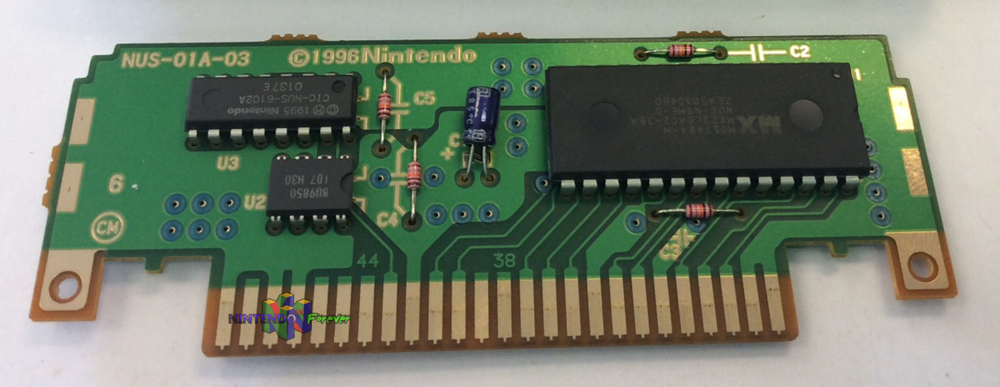

The N64 never had a hard drive like today's modern consoles have so how would games save your progress? Well, each game would save your progress to the cartrige on a specail chip for saving games called the EEP Rom. The eep rom was a bit like modern SD cards where it can store data for a long period of time without being connected to a power source. The image below (downloaded form Nintendo64Forever.com) shows the Super Mario 64 cartridge. The smallest chip is the EEP rom
 Each game has a different format that data is stored so there is no "universal" EEP rom reader/interputer. The Super Mario 64 PC port had just come out and an online friend asked me if i could convert his emulator save file to the PC port save file. So we brainstromed and inspected manny PC port save files as well as emulator save files and couldn't figure out how to convert his save file. The idea of a save file convert lied on a shelf for a couple of months and then I decied to see if I could write a program that could read what coin scores I got on each level and it worked! I was able to see what my coin scores were! This sparked my interest and led to me coding a full save file editor called the
Super Mario 64 Save File Manager
After I had finshed the program I decied to make this documentation on how each byte of the EEP Rom works because the documentation for the SM64 EEP Rom was not complete. I played through the game at least 6 times to figure out what bits did what inside each byte. There is alot of documentaion on the Hack64 website that I did use for the basic EEP Rom layout but none of the castle secret stars were docuemted so I felt this documetaion nessisary.